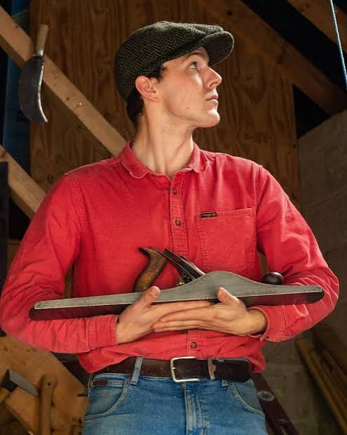
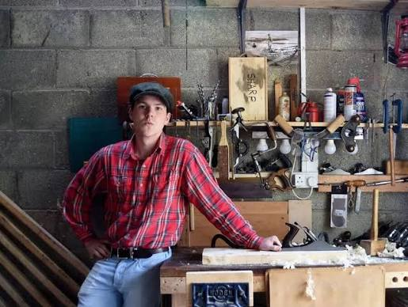
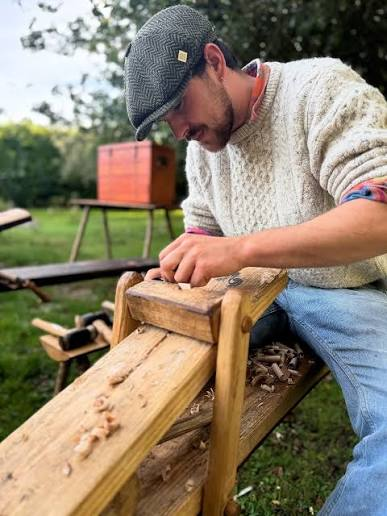
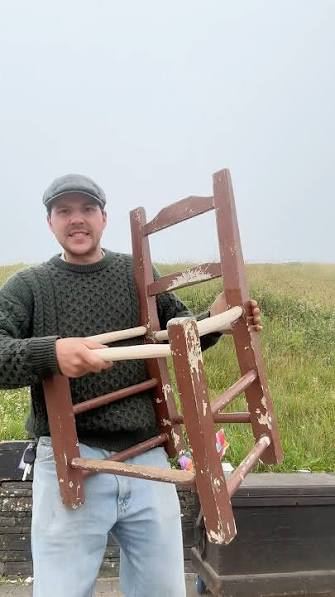
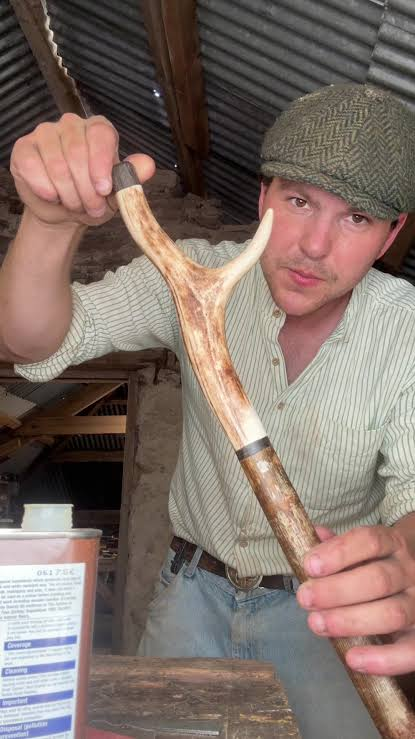
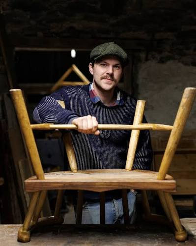
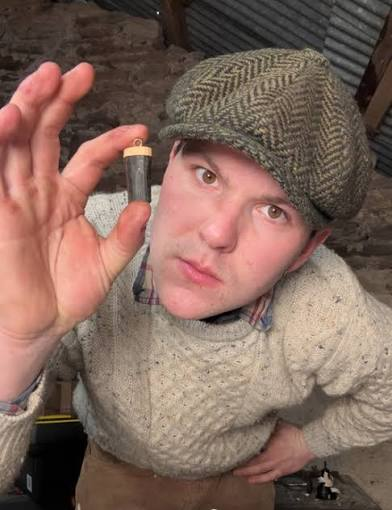
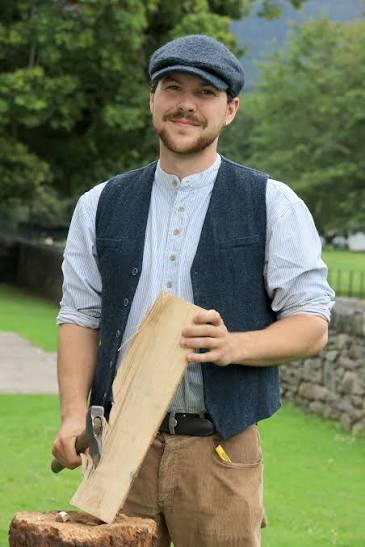

I'm Eoin Reardon, known online as Pint of Plane. I build chairs, currachs, and stone walls the way they were built before power tools existed, and I film the whole slow, stubborn process.


Woodworking started as a hobby before it became a full-time craft, and eventually, a full-time living.
Every project is built with hand tools: planes, chisels, drawknives, saws. No power sanders, no shortcuts. Just the same methods Irish craftsmen used for generations, from shillelagh-making and sugán chair weaving to currach building and dry-stone walling.
I share the process on YouTube, TikTok, and Instagram: the failures as much as the finished pieces, because the mistakes are usually where the actual craft gets taught.
Stills from the same builds you'll see on the channel, one frame at a time.

F.01
F.02
F.03
F.04
F.05
F.06A running record of what's on the bench, from beginner projects to multi-week restorations.
The content stays free for everyone, but there are a few ways to chip in if you'd like to.
Join 2,000+ members supporting new builds, and get project write-ups like the Sugán Chair plans PDF.
patreon.com/EoinReardonNew builds, restorations, and the occasional disaster, posted regularly from the workshop in Cork.
Shorter, behind-the-scenes cuts of the same builds, day to day, tool to tool.